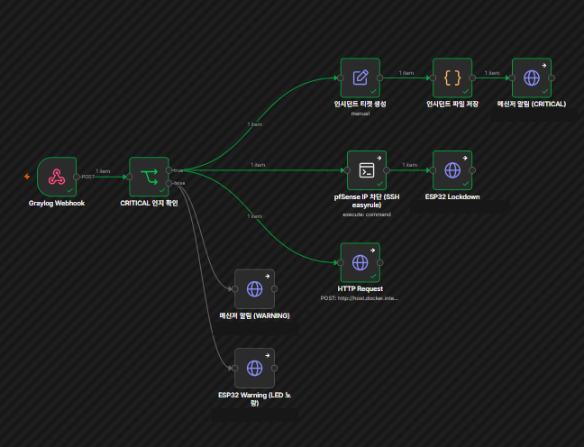

포트 스캔, 무차별 대입, 유출 키 재사용, 비정상 장비 제어는 단계마다 따로 보면 애매한 이벤트입니다. 시스템별로 로그가 흩어져 있으면 지금 공격이 진행 중인지 알기 어렵습니다.
보안 회사에는 공격이 계속 들어옵니다. 대시보드와 알림 메시지가 이미 많아도 가장 직관적인 방법은 벽에 걸린 시계처럼 상태가 한눈에 보이는 것이라고 생각했습니다. 또 공격은 온라인에만 오지 않고 출입문 같은 물리 장치에 대한 API 공격으로도 올 수 있어서, 이를 바로 감지해 물리적으로 보여주는 IoT 시스템을 만들고 싶었습니다.
3인 팀의 팀장으로 시나리오3(킬체인 상관분석·IoT 대응)을 전담했고, 팀의 통합 보고서 취합과 회의록 작성을 맡았습니다. 시나리오1(로그 버퍼링 Middleware)과 시나리오2(유출 API 키 탐지, 공용 웹앱)는 팀원이 담당했고, 제 파트는 이들이 만든 이벤트를 이어서 판단하고 대응하는 계층입니다.
Graylog 상관분석 규칙과 n8n 자동 대응 워크플로우를 설계·구현했고, ESP32-C3에 LED 4색을 붙인 독립형 HTTP 서버 펌웨어와 배선을 구현했습니다. 시연 시나리오를 설계했습니다. 보고서와 발표 자료는 각자 맡은 시나리오 파트를 팀원이 직접 써 오고, 저는 이를 취합해 하나로 통합했습니다.
상관분석 규칙: 이벤트를 client_ip로 묶어 10분 윈도우 안에 서로 다른 event_type이 3종 이상이면 CRITICAL, 2종이면 WARNING으로 판정합니다. 시나리오1의 PORT_SCAN·BRUTE_FORCE도 같은 client_ip 필드를 쓰는 것을 확인해 쿼리에 추가해, 팀 전체의 공격 로그가 이 규칙으로 들어오게 했습니다.
4단계 상태: 파랑(부팅) · 초록(정상) · 노랑(1~2단계 탐지, 차단 없이 관찰) · 빨강(3단계 확정, 차단과 Lockdown). 정찰만으로 CRITICAL을 올리면 알림 피로가 생겨 경고와 CRITICAL을 분리했습니다.
오케스트레이션: Graylog는 n8n 웹훅을 한 번만 호출하고, pfSense 공격 IP 차단 · ESP32 Lockdown · 대시보드 티켓 · 디스코드 봇 알림은 n8n이 병렬로 실행합니다. Graylog가 장비를 직접 건드리지 않아 대응을 추가할 때 n8n 노드 하나만 늘리면 됩니다.
ESP32 장치: 자체 HTTP 서버(/status, /warning, /lockdown, /unlock, /device). 이미 Lockdown이면 경고를 무시하고 장치 제어는 423으로 거부해, 확정된 대응이 경고로 되돌아가지 않게 했습니다.
1) 파랑만 켜지고 나머지 LED가 안 켜졌습니다. 부품·저항 교체, 브레드보드 없이 3V3 직결, 펌웨어 삭제 후 재업로드를 모두 해도 같았습니다. REPL에서 핀에 값을 직접 줘도 코드는 정상인데 LED만 꺼진다는 점에서, 원인이 코드가 아니라 핀이 꽂힌 브레드보드 칼럼의 접촉 불량임을 특정했습니다. GPIO3·5·6을 버리고 GPIO0·7·10으로 새 칼럼에 재배선해 해결했습니다.
2) n8n에서 pfSense로 거는 SSH가 handshake 타임아웃으로 실패했습니다. 연결 테스트는 통과하는데 실행만 막혔고, 같은 컨테이너에서 시스템 ssh로 같은 명령을 실행하면 성공했습니다. 네트워크와 계정은 아니라고 보고 n8n 내장 ssh2 라이브러리의 알고리즘 협상 문제로 결론 내려 Ed25519 개인키 인증으로 교체했습니다. 이 문제로 CRITICAL 분기의 나머지 노드까지 막혀 있었는데 함께 풀렸습니다.
두 문제 모두 증상이 같아도 원인이 어느 층인지에 따라 해결이 완전히 달라서, 하나씩 배제해 범위를 좁히는 방식이 가장 빨랐습니다.
경고용 IP로 정찰·인증 공격 2종을 보내면 보드가 노랑에서 멈추고(차단 없음), 새 IP로 장치 제어까지 3종을 보내면 CRITICAL이 되어 pfSense 차단 표가 0건에서 1건으로 늘고 ESP32가 빨강으로 고정되며 디스코드 봇 알림과 대시보드 티켓이 자동으로 생성되는 전 구간을 시연으로 확인했습니다.
한계는 규칙이 3종 모였는지만 보고 순서는 보지 않는 점, Lockdown 상태가 보드 메모리에만 있어 재부팅하면 초기화되는 점입니다. 시나리오1·2의 실제 공격을 같은 IP로 이어 붙인 전체 통합 재현은 추가 검증 단계입니다. 관제실 벽 LED 패널과 출입문 연동은 아직 구현 전의 향후 구상입니다.